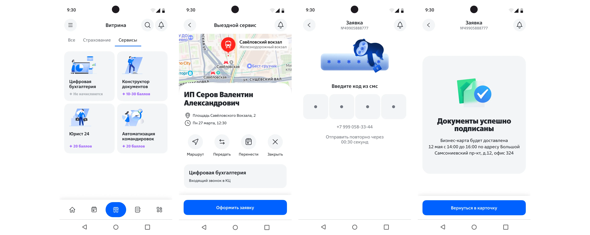
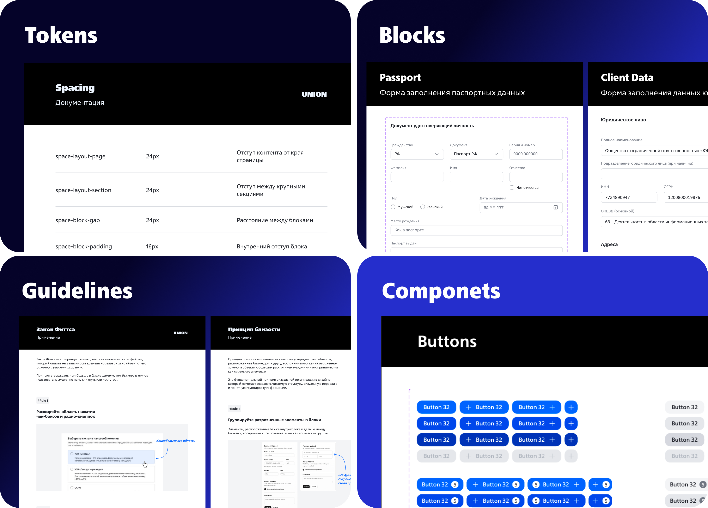
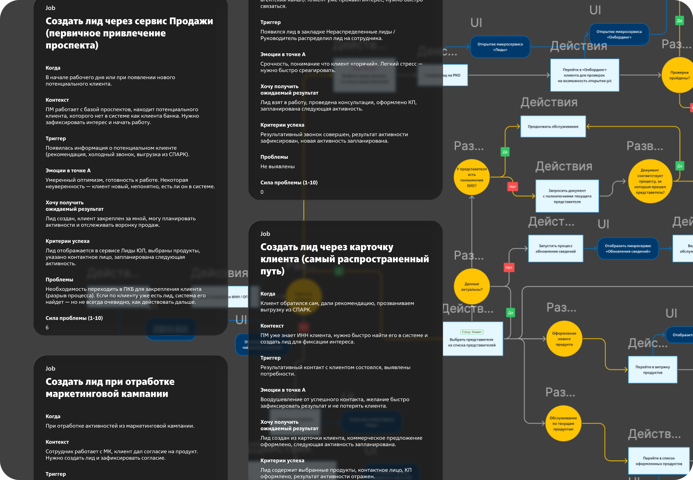
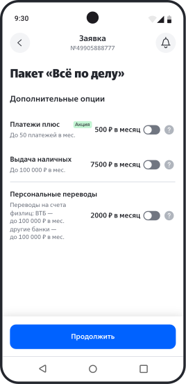
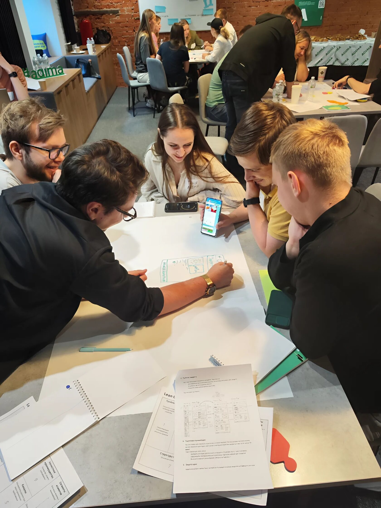

Как я перезапустил 50+ продуктов на новой визуальной архитектуре и объединил дизайн в единый опыт.

Во время цифровой трансформации ВТБ переосмыслить всю визуальную платформу продуктов, перепроектировать разрозненное легаси в единый опыт и обеспечить рост конверсии продуктовых заявок.
Единая библиотека иллюстраций разработана совместно с дизайнерами розничного и СМБ бизнеса — работает и в интерфейсе, в BTL и в KV.
Построил дизайн-систему на основе атомарного дизайна: токены (цвет, типографика, отступы), атомы (кнопки, инпуты, иконки), молекулы и организмы — переиспользуемые блоки интерфейса. Это позволило командам собирать экраны из готовых компонентов без потери консистентности.

После анализа всех флоу спроектировали единый паттерн оформления заявок — не нарушая бизнес-логику отдельных продуктов, но давая клиенту предсказуемый опыт на всём пути.
Для закрепления вижена совместно с коллегами запустил внутренний акселератор для продуктовых дизайнеров для прокачки навыков дизайна в финтехе в контексте ВТБ.

Создал единый клиентский путь — «мостик» между маркетплейсом, лидами, cross-sell и заявками. Погрузился в архитектуру данных каждого сервиса и собрал вижн, который мы с архитектором данных защитили перед бизнес-юнитом. Он лёг в основу всех интерфейсов, дизайн-системы и клиентского опыта.
Сервис вызывается перед оформлением каждого продукта и проверяет клиента. Моя ключевая роль — добиться минимума ручных шагов. Чтобы интерфейс был простым и не мешал оформлять core-заявку, я глубоко погрузился в архитектуру данных и бизнес-процесс: понял, что можно автоматизировать, что не выводить пользователю, а что показать обязательно — например, тексты финмониторинга, если клиент не прошёл проверку.
Отдельно подписать, сфотографировать и загрузить каждый документ продуктовой заявки. Если не взял с собой бланки, при выезде к клиенту оформить заявку невозможно.
Так происходило, потому что большинство команд ориентировались на веб и легаси-процесс бумажного подписания. Несмотря на наличие смс-подписания, многие команды про него не знали либо ставили в план на следующий год.
Нашёл все разрывы процесса, лидировал тестирование и внедрение единого паттерна и обеспечил проникновение во все продуктовые заявки.

Ключевой челлендж — договориться о контракте данных между продуктами и выводить персональные рекомендации на самых конверсионных шагах по всему флоу оформления.

Лидировал внедрение UX-тестов в команды и их результаты в качестве одного из ключевых критериев принятия решений вывода в релиз. Был евангелистом фреймворка JTBD и помог организовать инфраструктуру для проведения интервью.